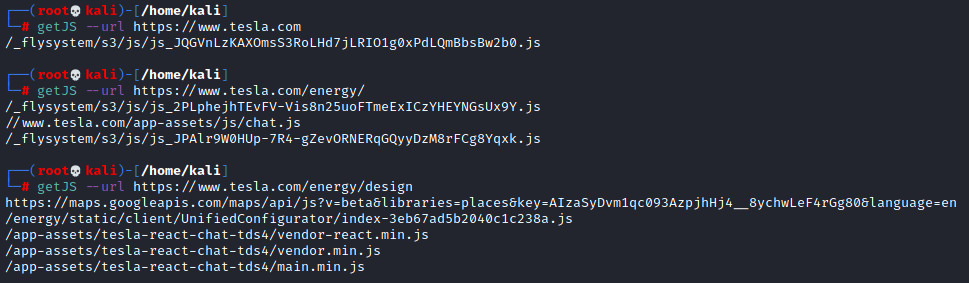

scrape Javascript files from page source code
GetJS
GITHUB:
https://github.com/003random/getJS
Tool to
extract the javascript files name from the source code
of a webpage or a set of given urls
Installation:
go get github.com/003random/getJS
Usage, we have different possibilities on how to supply the sources:
echo "https://github.com" | getJS
getJS --url https://example.com
getJS --input domains.txt
echo "https://github.com" | getJS --url https://example.com --input domains.txt
